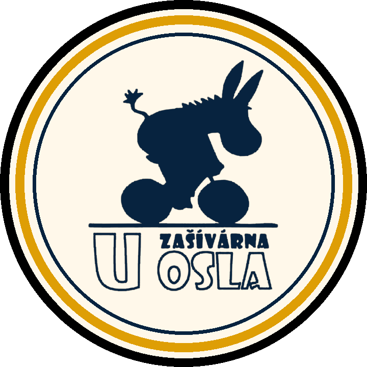

21. 6.
Na Koruně
Registrace od 15:00
Začátek 15:30

Blitz 5+0 v létě 2026
Otevřená série bleskových turnajů pro všechny, kdo si chtějí přes léto zahrát šachy v pohodové atmosféře. Registrace probíhá vždy na místě.Pořádá ŠO Mařatice.

Program
Registrace od 15:00
Začátek 15:30

Registrace od 15:00
Začátek 15:30

Registrace od 15:00
Začátek 15:30

Registrace od 12:30
Začátek 13:00
Vrchol celé Tour po závěrečném turnaji.
Společné informace
Ceny
Celkové pořadí
Z každého turnaje se započítávají body do celkového žebříčku Tour. Nejlepší hráč celé Tour získává pohár a speciální cenu.
Simultánka
Simultánky s GM Zbyňkem Hráčkem se zúčastní 20 hráčů. Vítěz každého turnaje získá právo bezplatné účasti. Ostatní hráči mají možnost se přihlásit na hampi@email.cz. Startovné je 500 Kč.